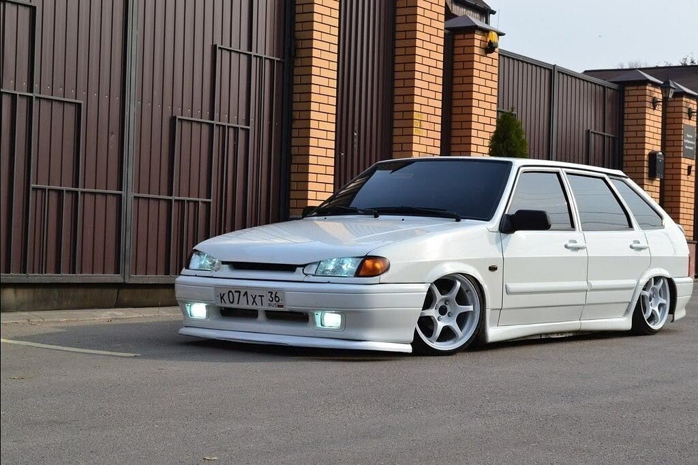
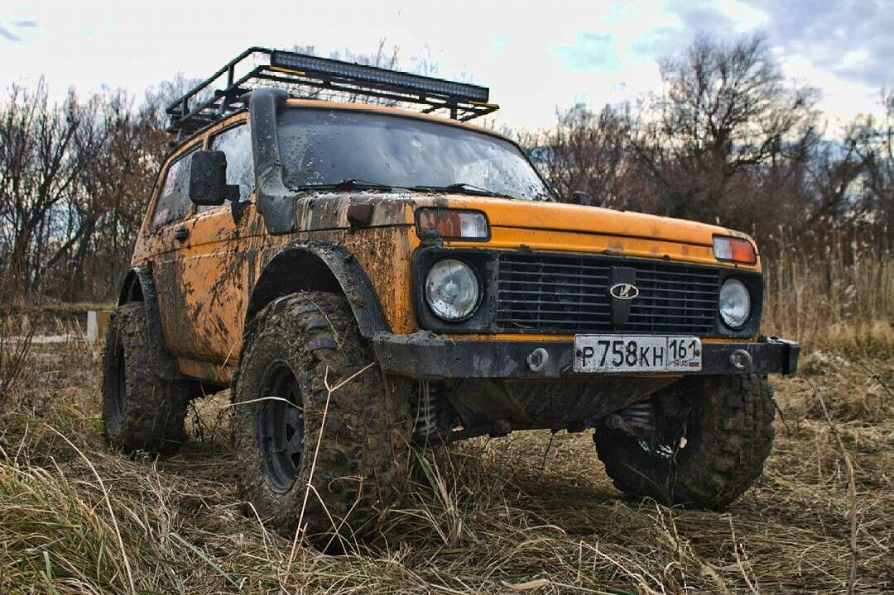
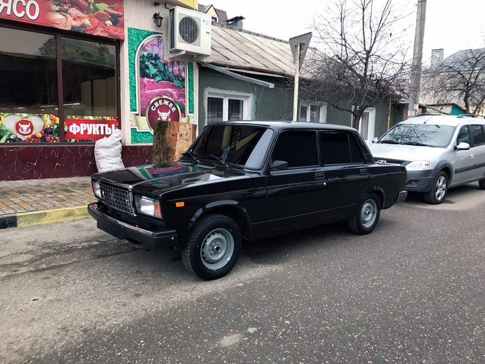

Самое масштабное и бюджетное направление тюнинга в РФ это так называемый "БПАН" (без посадки авто нет).
- В данной разновидности есть своя определенная особенность- чем автомобиль ниже, тем кручу владелец. Не важно какими путями произведено занижение авто, главное что бы автомобиль четко лежал порогами ближе к земле.
- Еще обязательной особенностью является тонировка, тонировка обязательно должна быть в круг и чем темнее тем лучше.
В остальном тюнинге каждый владелец проявляет свой талант мыслить, будь это колеса, музыка или виниловые пленки.
Далее хочу выделить так называемые "OFF-ROAD" кланы. Здесь уже присутствуют различные возрастные группы любителей данного вида экстрима. Каждый автомобиль затачивается под максимальную проходимость по бездорожью.
- В отличие от других стилей здесь обязательным фактором является лифт кузова, т.е. сделать автомобиль максимально высоким.
- Далее идут грязевые колеса повышенной проходимости.
- Ну и в добавок ко всему выше сказанному добавляется оборудование в виде шноркелей, лебедок и тому подобному что бы автомобиль мог выжить в любой ситуации.
ОПЕР СТАИЛ самый простой но самый опасный стиль. Опасный потому что суть заключается в экстремальном вождении, при любых погодных условиях и в любом потоке.
- Требование здесь одно- тонировка в круг и доработка силовых агрегатов